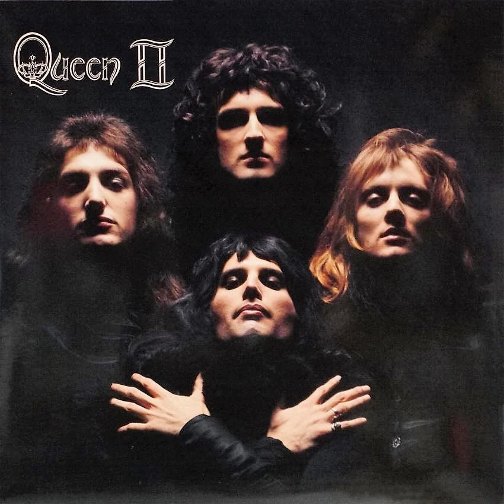

Una selección personal de artistas que han marcado la historia de la música
Queen, formada en Londres en 1970, es una de las bandas más icónicas y revolucionarias de la historia del rock. Compuesta por Freddie Mercury (vocalista), Brian May (guitarrista), Roger Taylor (baterista) y John Deacon (bajista), la banda destacó por su sonido único que combinaba elementos de rock clásico, ópera, disco y pop progresivo.
Su capacidad para reinventarse constantemente a lo largo de sus dos décadas con Mercury (fallecido en 1991) les permitió crear un legado musical extraordinariamente diverso y duradero. La voz inconfundible de Mercury, los arreglos vocales complejos, los solos de guitarra distintivos de May y sus espectáculos en vivo energéticos definieron una era en la música popular.
Considerado su obra maestra, este álbum contiene "Bohemian Rhapsody", una de las canciones más revolucionarias del rock. El disco muestra perfectamente la versatilidad musical de Queen, transitando desde baladas como "Love of My Life" hasta rock duro en "Death on Two Legs", mientras muestran su capacidad para la experimentación con elementos sinfónicos, operísticos y de music hall.
Formada en Abingdon, Oxfordshire en 1985, Radiohead se ha establecido como una de las bandas más influyentes e innovadoras de las últimas décadas. Compuesta por Thom Yorke (voz, guitarra, piano), Jonny Greenwood (guitarra principal, teclados), Ed O'Brien (guitarra, voces), Colin Greenwood (bajo) y Philip Selway (batería), la banda ha evolucionado dramáticamente desde sus inicios en el rock alternativo.
Lo que distingue a Radiohead es su constante reinvención y su disposición a experimentar con sonidos, estructuras y tecnología. Han navegado desde el rock alternativo hacia territorios más experimentales, incorporando electrónica, música ambiental, jazz y música clásica contemporánea a su sonido. Sus letras, a menudo crípticas y profundamente reflexivas, abordan temas como la alienación, la política global, la tecnología y la condición humana en la sociedad moderna.
Ampliamente considerado como una obra maestra, este álbum marcó un punto de inflexión no solo para la banda sino para la música rock en general. Con temas como "Paranoid Android", "Karma Police" y "No Surprises", OK Computer explora la ansiedad, la desconexión y la alienación en un mundo cada vez más tecnológico. Su sonido atmosférico, estructuras complejas y producción innovadora lo han convertido en uno de los álbumes más influyentes de todos los tiempos, anticipando muchas de las preocupaciones sociales y tecnológicas del siglo XXI.